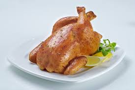

Chicken

Chicken meat, or simply "chicken," refers to the flesh of the domesticated chicken bird, Gallus gallus domesticus, consumed as food. It's a common type of poultry and a staple in many cuisines worldwide.